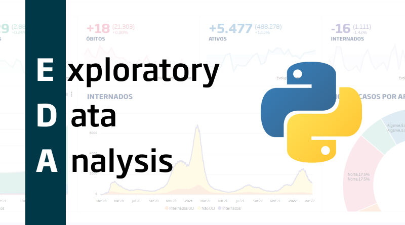

In this project, I led a comprehensive data cleaning initiative for a housing dataset using SQL. The primary goal was to ensure the accuracy, consistency, and completeness of the data to facilitate meaningful analysis and reporting. The dataset contained information about residential properties, and the data cleaning process involved addressing issues such as missing values, data inconsistencies, and preparing the dataset for subsequent analysis

Data Exploration of Covid-19 Dataset in SQL Server.In my SQL data exploration project, I analyzed a COVID-19 dataset to unveil patterns and trends in the spread of the virus. Through systematic queries, I gained insights into the impact over time, regional variations, and correlations between different factors. This project not only enhanced my SQL skills but also contributed valuable insights to our understanding of the global health crisis
Transformed raw data into visually compelling charts and graphs, allowing users to explore key metrics such as pricing trends, geographical distribution, and room types.The fusion of data and visualization in this project aims to enhance understanding and facilitate data-driven results.

In my Amazon Web Scraper project, I harnessed the power of Python, along with the BeautifulSoup (bs4) library, to extract valuable data from the Amazon website. Leveraging web scraping techniques, I systematically retrieved information such as product details, prices, and customer reviews. The project showcased my proficiency in utilizing Python for web scraping tasks, providing a foundation for extracting and analyzing data from one of the world's largest e-commerce platforms, Amazon.
In this project, I spearheaded a comprehensive data cleaning and preprocessing initiative using Python to ensure the quality and reliability of a diverse dataset. The primary focus was on addressing data inconsistencies, handling missing values, and preparing the dataset for downstream analysis and modeling.

In this project, I conducted a comprehensive Exploratory Data Analysis (EDA) using Python to extract valuable insights from a complex dataset. The primary objective was to gain a deep understanding of the data's characteristics, identify patterns, and uncover meaningful trends to inform decision-making processes.

Championed a groundbreaking analysis of a dynamic movie dataset, leveraging Python, Pandas, Matplotlib, Seaborn, and NumPy to unravel intricate correlations within the cinematic landscape. Executed meticulous data cleaning, eliminating anomalies and fortifying the dataset for robust analysis. Engineered sophisticated visualizations that transcended traditional reporting, transforming complex correlations into compelling narratives for diverse audiences.
Automated ETL Process with Apache Airflow in EC2 and AWS S3
This project automates the Extract, Tranform, Load (ETL) process using Apache Airflow on an Amazon EC2 instance. The ETL process extracts data from various sources, transforms it, and loads the transformed data into an Amazon S3 bucket.